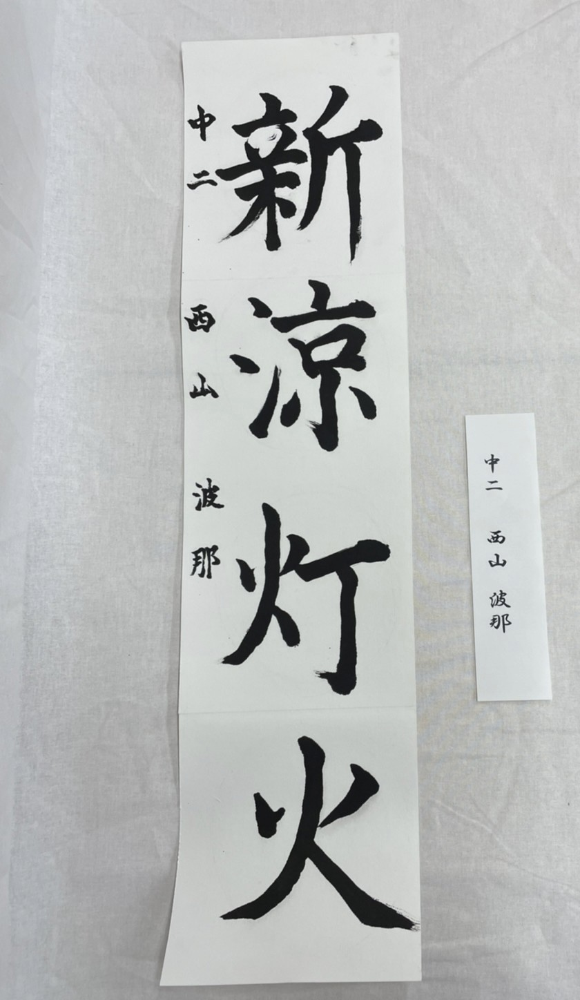

中2の作品
臨書『九成宮醴泉銘』
九成宮醴泉銘は楷書で1行50字、24行に謹厳に揮毫します。 一点一画、寸分の隙もない緻密な造形性と、格調の高さとは、古くから｢楷法の極則｣と称して尊重され、楷書の理想形とされてきました。
髙木紗憂


西山波那


創作
髙木紗憂

「雪月風花」とは四季折々の美しい自然の景色のことです。今回のテーマが春夏秋冬だったのでこの四字熟語にしました。
西山波那
- 
「新涼灯火」という四字熟語は、秋の始まりを表す熟語で、ちょうどなでしこ祭を行う季節なので、この四字熟語を選びました。